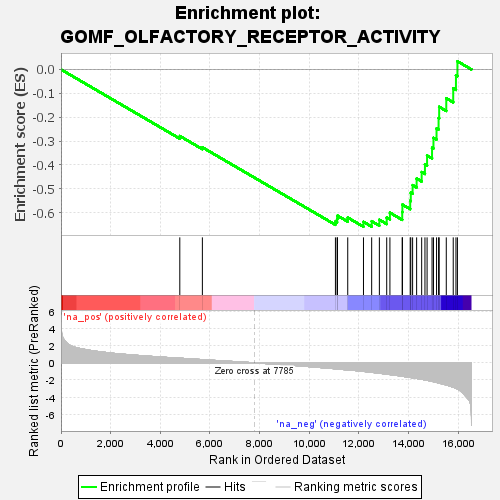

| | | Dataset | all_genes |
| Phenotype | NoPhenotypeAvailable |
| Upregulated in class | na_neg |
| GeneSet | GOMF_OLFACTORY_RECEPTOR_ACTIVITY |
| Enrichment Score (ES) | -0.65888155 |
| Normalized Enrichment Score (NES) | -1.9547062 |
| Nominal p-value | 0.0 |
| FDR q-value | 0.0067458698 |
| FWER p-Value | 0.217 |
Table: GSEA Results Summary

Fig 1: Enrichment plot: GOMF_OLFACTORY_RECEPTOR_ACTIVITY
Profile of the Running ES Score & Positions of GeneSet Members on the Rank Ordered List
| SYMBOL | RANK IN GENE LIST | RANK METRIC SCORE | RUNNING ES | CORE ENRICHMENT | | 1 | OR1F1 | 4785 | 0.536 | -0.2789 | No |
| 2 | OR1D2 | 5694 | 0.373 | -0.3263 | No |
| 3 | OR2L2 | 11053 | -0.691 | -0.6367 | No |
| 4 | OR5A2 | 11120 | -0.708 | -0.6262 | No |
| 5 | OR10A2 | 11137 | -0.714 | -0.6125 | No |
| 6 | OR14J1 | 11549 | -0.821 | -0.6205 | No |
| 7 | OR5AU1 | 12183 | -0.993 | -0.6385 | Yes |
| 8 | OR1A1 | 12513 | -1.102 | -0.6358 | Yes |
| 9 | OR2A5 | 12823 | -1.213 | -0.6297 | Yes |
| 10 | OR6Y1 | 13119 | -1.317 | -0.6205 | Yes |
| 11 | OR10K1 | 13248 | -1.370 | -0.6001 | Yes |
| 12 | OR52K1 | 13744 | -1.566 | -0.5980 | Yes |
| 13 | OR10H5 | 13751 | -1.569 | -0.5661 | Yes |
| 14 | OR6J1 | 14065 | -1.704 | -0.5501 | Yes |
| 15 | OR6C74 | 14089 | -1.715 | -0.5163 | Yes |
| 16 | OR2AT4 | 14162 | -1.752 | -0.4847 | Yes |
| 17 | OR8A1 | 14324 | -1.824 | -0.4570 | Yes |
| 18 | OR56A4 | 14527 | -1.917 | -0.4300 | Yes |
| 19 | OR10H1 | 14659 | -1.987 | -0.3971 | Yes |
| 20 | OR2M3 | 14745 | -2.034 | -0.3605 | Yes |
| 21 | OR7D2 | 14945 | -2.165 | -0.3282 | Yes |
| 22 | OR2G6 | 15002 | -2.194 | -0.2865 | Yes |
| 23 | OR7C1 | 15126 | -2.285 | -0.2471 | Yes |
| 24 | OR2T12 | 15208 | -2.350 | -0.2037 | Yes |
| 25 | OR1I1 | 15232 | -2.367 | -0.1566 | Yes |
| 26 | OR5AS1 | 15518 | -2.587 | -0.1207 | Yes |
| 27 | OR4K17 | 15798 | -2.852 | -0.0791 | Yes |
| 28 | OR4D9 | 15908 | -2.961 | -0.0250 | Yes |
| 29 | OR7A17 | 15967 | -3.058 | 0.0343 | Yes |
Table: GSEA details [plain text format]
Fig 2: GOMF_OLFACTORY_RECEPTOR_ACTIVITY: Random ES distribution
Gene set null distribution of ES for GOMF_OLFACTORY_RECEPTOR_ACTIVITY